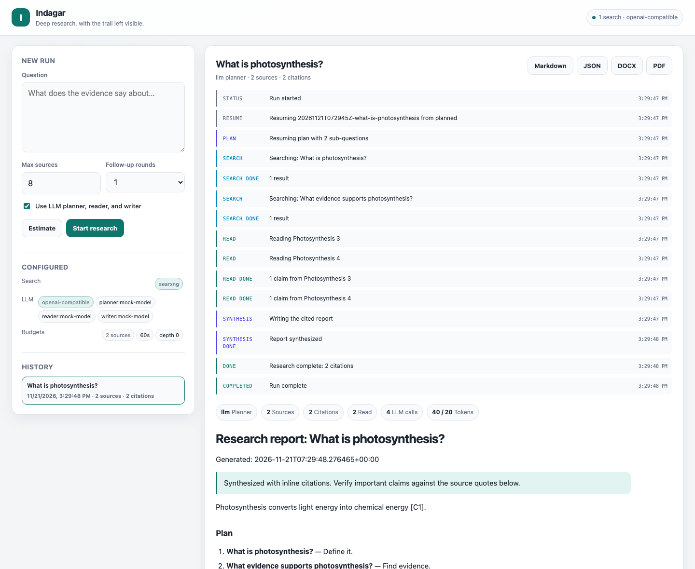

Plans the work
Turns one question into searchable sub-questions, then adds focused follow-ups when coverage is thin.
Local-first deep research
Indagar plans sub-questions, searches academic and web sources, reads what it finds, and writes a report with inspectable citations. Run it from the command line, the browser, or the desktop app.
Choose your platform below.

What it does
Turns one question into searchable sub-questions, then adds focused follow-ups when coverage is thin.
Merges OpenAlex, Crossref, arXiv, web search, and optional video or podcast sources.
Extracted quotes are checked against the source text. Unsupported quotes are dropped.
The writer can only cite IDs in the ledger. Unknown IDs trigger the grounded evidence fallback.
Bring Anthropic, OpenAI, Ollama, or another compatible endpoint. Runs and keys stay on your machine.
Markdown, JSON, DOCX, and PDF. Packaged desktop builds check GitHub for updates.
How it works
Source tiers
Labels are routing hints, not peer-review claims. Academic results come from scholarly APIs; web and media results are never presented as peer-reviewed.
Install from PyPI for the CLI and web UI, or download the desktop app.